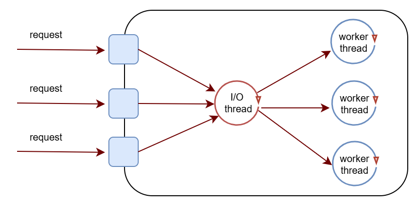
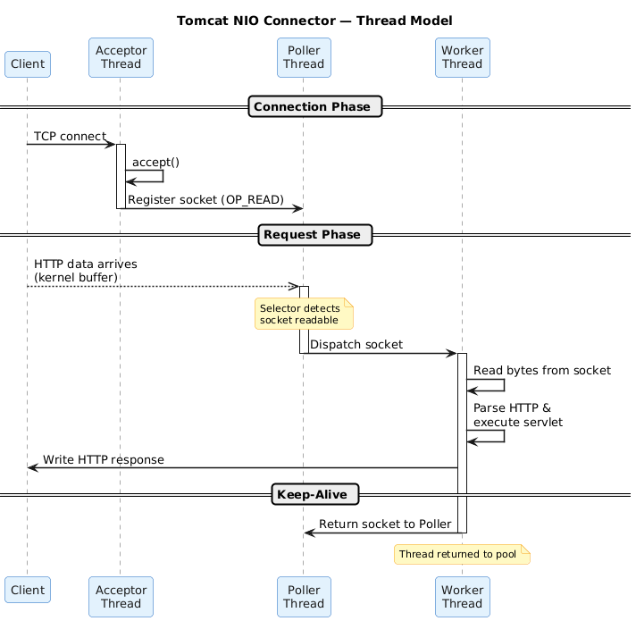
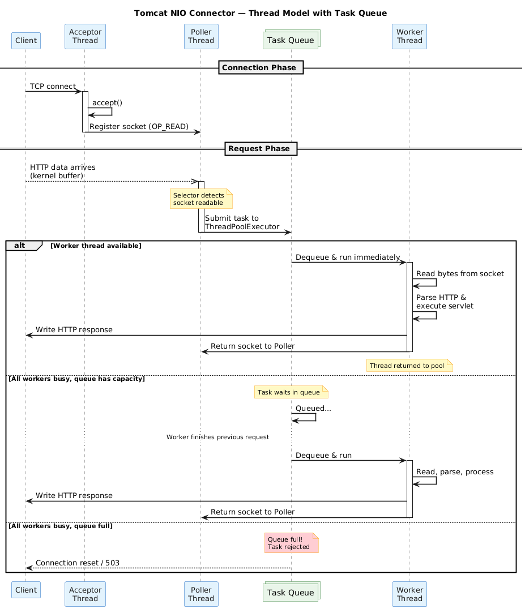
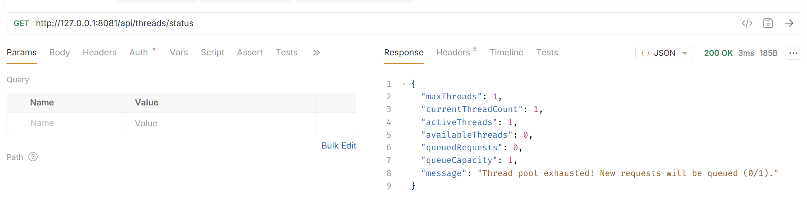
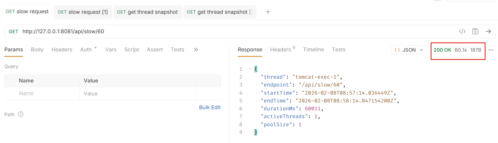
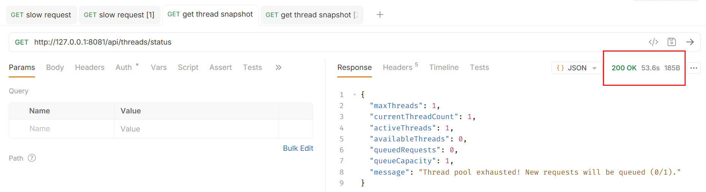
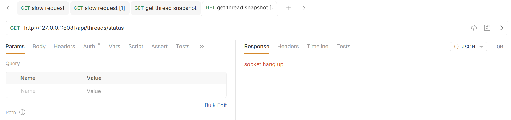

Mô hình web server 1 thread / 1 request
Bài viết này giải thích mô hình thread / request của một web server, lấy ví dụ trên Apache Tomcat và Spring framework để giải thích cách một web server xử lý request từ client.
Vòng đời của một request
Client khởi tạo kết nối TCP -> Gửi request -> Server đọc request (header & body) -> Routing & Xử lý middleware -> Xử lý logic trong ứng dụng -> Viết lại response -> Keep alive hoặc đóng kết nối TCP.
Mô hình 1 thread / 1 request
Hiện nay, nhiều web server sử dụng mô hình 1 thread / 1 request để xử lý request từ client.

Có 2 loại thread với chức năng hoàn toàn khác nhau ở mô hình này:
- I/O thread: lắng nghe trên socket và phát hiện dữ liệu đã sẵn sàng để đọc, tạo task để push vào queue mà worker thread đang lắng nghe và xử lý.
- Tomcat chỉ sử dụng một thread để làm nhiệm vụ này, tham khảo bài viết network-io-multiplexing về kĩ thuật epoll để hiểu thêm cách thức hoạt động ở tầng hệ điều hành.
- Worker thread: mỗi khi có task từ queue thì lấy ra để đọc nội dung request từ socket, xử lý logic (validate dữ liệu, tính toán, truy vấn database, gọi đi các service khác,...) và ghi response vào socket lại.
Có một điểm cần chú ý ở đây là thuật ngữ request sẽ khác với connection, request là các yêu cầu HTTP GET/POST/PUST,... còn connection là TCP connection.
Hình sau mô tả chi tiết hơn các thành phần trong quá trình xử lý một connection và request.

Một số phân tích về ưu nhược điểm
Với việc sử dụng riêng một thread để phát hiện khi nào có request sẵn sàng, server sẽ không bị chiếm dụng tài nguyên cho các long-live connection, tức là client có thể mở một TCP connection và gửi nhiều request HTTP trên đó, worker thread chỉ được sử dụng thực sự khi có request.
Mô hình này còn cho phép debug lỗi dễ dàng ở tầng ứng dụng, mỗi request sẽ được xử lý bởi một worker thread, các thông tin về request context sẽ không bị nhầm lẫn, và có thể xem được đầy đủ stacktrace khi có lỗi xảy ra.
Bên cạnh các ưu điểm, mặt tài nguyên của hệ thống cần được phân tích kĩ lưỡng khi sử dụng model này, nếu ở tầng ứng dụng sử dụng các thao tác blocking như kiểm tra dữ liệu, truy vấn database, gọi các service bên thứ 3, thì worker thread sẽ bị chiếm dụng trên toàn bộ thời gian này, có nghĩa là số request tối đa được xử lý tại một thời điểm sẽ bằng số lượng worker thread tối đa. Tối đa là bao nhiêu???
Về lý thuyết, một chương trình có thể tạo ra số lượng threads không giới hạn, nhưng việc quản lý threads tiêu tốn tài nguyên và nhiều threads dẫn tới context-switch của CPU cao, nếu không cấu hình giới hạn số lượng threads tối đa, chương trình có thể bị OOM, rất rủi ro.
Vậy thì, nếu có cấu hình, con số bao nhiêu là đủ? Điều này nói chung chung thì sẽ tuỳ thuộc vào workload của ứng dụng (I/O hay CPU nhiều) và kết quả benchmark thực tế với nhiều kịch bản chịu tải khác nhau.
Tiếp theo là phần chạy chương trình mẫu để hiểu được hành vi của request một khi không còn worker thread rảnh rỗi trong pool.
Demo
Github link: thread-per-request
Chuơng trình này tạo 1 web server đơn giản Spring và embedded Tomcat:
- Cấu hình số worker thread và task queue nhỏ để dễ dàng kiểm thử trên từng lần gọi API.
server.tomcat.threads.max=1: cấu hình worker threads size.server.tomcat.task-queue-capacity=1: cấu hình task queue size.
- Mô phỏng thời gian xử lý business bằng việc sleep worker thread.
- Cung cấp api để lấy thống kê số lượng threads hiện tại.
Hình sau thêm thành phần task queue vào giữa I/O thread và worker thread, khi worker thread pool không còn thread nào rảnh rỗi, những request mới sẽ được thêm vào task queue để chờ xử lý. Nếu worker thread mất quá nhiều thời gian để xử lý những request (có thể chương trình cần xử lý logic phức tạp, truy vấn database hay gọi API đến các service khác nhiều,...), số lượng task trong task queue sẽ tăng dần lên, client có thể gặp hiện tượng timeout với các giai đoạn sau của 1 request:
- request đang nằm trong task queue, chưa được xử lý bởi worker thread.
- request được xử lý bởi worker thread nhưng không thể trả về response.
- tệ hơn nữa, request đang được xử lý thì chương trình bị OOM.

Với worker thread size = 1, api lấy thống kê threads trả về như sau:

- cần 1 worker thread để xử lý request lấy thống kê threads.
- vì cấu hình worker chỉ có 1 thread nên số thread còn lại đang khả dụng trong pool sẽ bằng 0, lượt gọi API này chứng minh cấu hình
worker thread sizeđang hoạt động đúng như mong muốn.
Tiếp tục kiểm tra cách hoạt động của mô hình này bằng việc mô phỏng request cần thời gian xử lý lâu.
- gọi 1 API mô phỏng request cần 1 phút để xử lý.
- gọi 2 API lấy thống kê threads liên tiếp.
Với worker thread size = 1, queue size = 1 thì request thứ 3 sẽ bị reject, request thứ 2 sẽ phải chờ request thứ nhất xử lý xong.
Request thứ nhất cần 60s.

Request thứ hai được đưa vào queue và chỉ được xử lý sau request thứ nhất.

Request thứ ba bị từ chối vì task queue đã đầy.

Lần kiểm tra này chứng minh sự hoạt động của task queue với vai trò là buffer task khi mà tất cả threads trong worker đều bận.
Tổng kết
Bài viết đã trình bày mô hình thread per request của các web server và lấy ví dụ bằng Tomcat + Spring. Việc hiểu rõ mô hình này là một bước quan trọng trong việc hiểu rõ chương trình, là nền tảng cho các công việc benchmark, tối ưu hiệu năng.